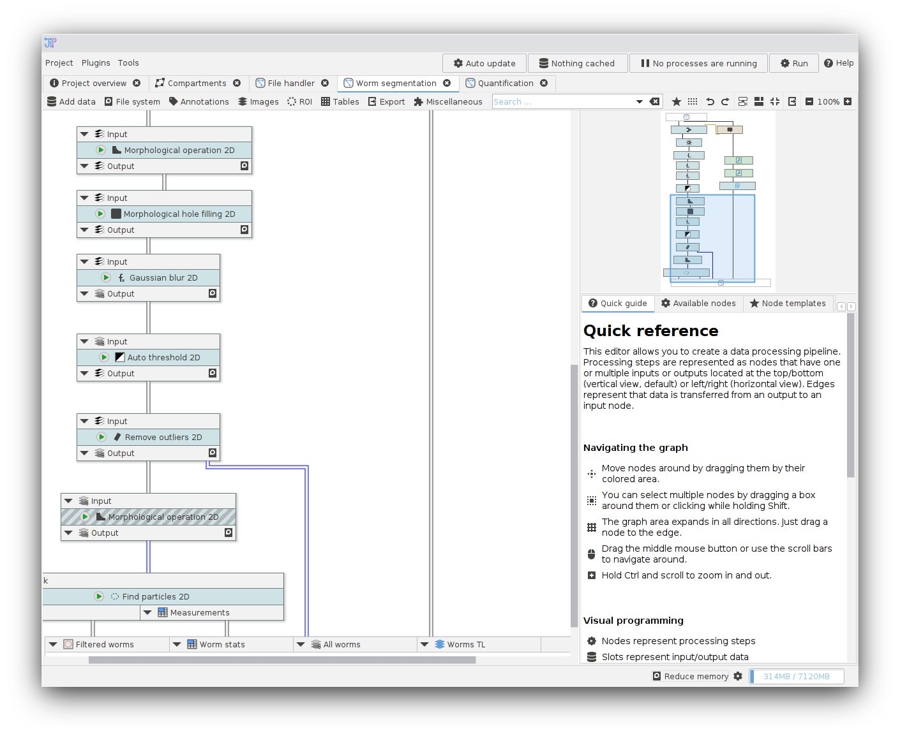
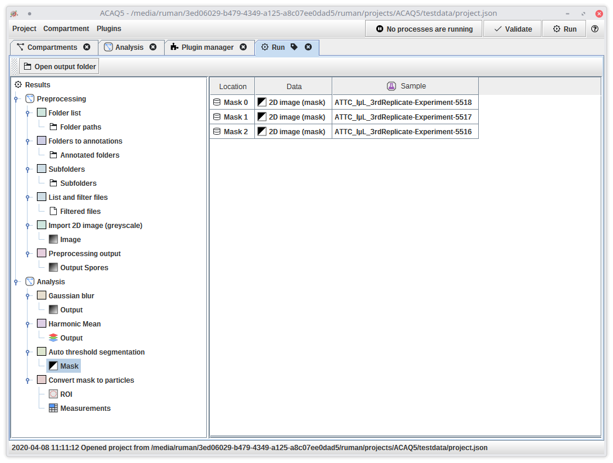
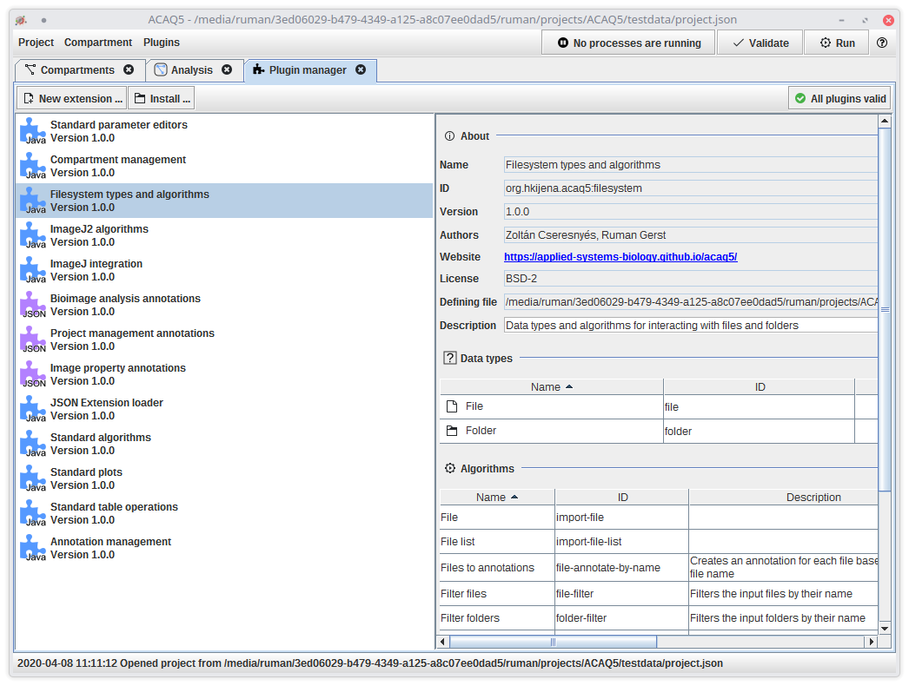

Macro programming for everyone!
JIPipe is a graphical batch processing programming language for ImageJ. It comes with an easy-to-use graphical macro editor that requires no programming knowledge. Image processing steps can be added to the user interface and connected to form powerful and complex pipelines that can be easily scaled up and down.

Macro support
You already developed custom ImageJ macros? JIPipe allows you to re-use your macros via a Macro node. Copy and paste your code, and add input and output slots.Algorithm finder
You do not know which should be the next processing step? The JIPipe algorithm finder not only lists all compatible processing steps for given data.Quick run & caching
What are the best algorithm parameters? Find those parameters can be very time-consuming.JIPipe allows you to easily test multiple algorithm parameters without re-calculating the previous steps. You can go back to an older set of parameters and directly compare the results.
Graph compartments
Graph-based programs get quickly confusing? JIPipe allows you to separate the analysis into multiple compartments. You can create as many compartments as you want, connect them, and also export and import them.Powerful result analysis
You can either analyze results directly after processing or load existing results directly into JIPipe. The powerful result analysis tool lets you import data back into ImageJ, or summarize and plot them directly within JIPipe.

Table analyzer
You want to quickly summarize a table of measurements? JIPipe comes with a tool to summarize and concatenate tables without any external tools. The tool can directly import table data generated by ImageJ.Plot builder
Need to quickly plot a table? JIPipe comes with a powerful plot builder that supports a multitude of different plot types, such as XY plots, bar charts, histograms, and box plots.Extending JIPipe
JIPipe can be extended by programmers and non-programmers via its Java API and its JSON extension API. JSON extensions can be easily created via a graphical user interface and allows you to publish your pipelines as algorithm node. You can also create a hierarchy of custom data annotation types using the built-in editor.

Extension builder
You want to publish your pipeline? JIPipe comes with a graphical user interface to create plugins. You can add custom algorithms and export them as distributable *.json file. Users just have to put this file into the ImageJ plugins folder.JIPipe was developed by Research Group Applied Systems Biology - Head: Prof. Dr. Marc Thilo Figge
HKI-Center for Systems Biology of Infection
Leibniz Institute for Natural Product Research and Infection Biology - Hans Knöll Insitute (HKI)
Adolf-Reichwein-Straße 23, 07745 Jena, Germany